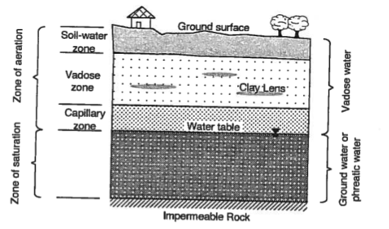

Essential Groundwater Review - I¶
Porous Media (pp. 15-21)¶
Porous media refers to a class of materials that have interconnected void spaces or pores, allowing the flow and transport of fluids. In the context of groundwater, porous media plays a crucial role as it forms the subsurface medium through which water flows and contaminants can be transported. The properties and characteristics of the porous media significantly influence the movement of groundwater and the fate of contaminants within an aquifer.
Two fundamental properties govern behavior of fluids in a porous media:
The porosity, which represents the volume of void spaces within the material, determines the storage capacity for fluid within the porous media and affects the flow rate. Porous media with high porosity can concievably store more water, but it may also delay movement of groundwater because of reduced size of individual pores.
The permeability, which describes the ease with which fluids can flow through the porous media, depends on factors such as pore size, shape, and connectivity. High-permeability materials, like coarse sand or gravel, allow water to flow more easily, whereas low-permeability materials, like clay or silt, impede water movement. Permeability influences the speed and direction of groundwater flow, as well as the potential for contaminants to migrate through the aquifer.
Porous media also exhibits heterogeneity, meaning it can have spatial variations in these fundamental properties. This heterogeneity arises from geological processes, such as sediment deposition, compaction, and tectonic activity. Variations in porosity and permeability within a porous medium lead to complex flow patterns, preferential flow paths, and the potential for localized contaminant accumulation or dispersion. Understanding the heterogeneity of porous media is crucial for accurately predicting groundwater flow and contaminant transport.
Interactions between fluids and porous media involves various physical and chemical processes. Advection, the bulk movement of groundwater, is influenced by the permeability and hydraulic gradient. Dispersion, the spreading of solutes due to molecular diffusion and mechanical mixing, occurs as water moves through the porous medium. Adsorption refers to the attachment of contaminants to the solid surfaces of the porous media, affecting their mobility and persistence. These processes, along with others like biodegradation and chemical reactions, shape the fate and transport of contaminants in groundwater.
Saturated Zone (pp. 16-17)¶
The saturated zone refers to the region within the subsurface where all the available pore spaces are filled with water, creating a saturated condition. It is an important concept in groundwater hydrology and plays a crucial role in groundwater flow and contaminant transport.
The saturated zone begins at the water table, which represents the boundary between the unsaturated zone (where there is both air and water in the pore spaces) and the saturated zone (where all pore spaces are filled with water). The depth of the saturated zone can vary depending on factors such as topography, geology, and seasonality.

Within the saturated zone, groundwater flow occurs as water moves through the interconnected pore spaces under the influence of gravity. The direction and speed of groundwater flow are governed by hydraulic gradients, which are the differences in hydraulic head (a measure of the potential energy of groundwater) between different locations. The saturated zone acts as a conduit for the movement of water from areas of higher hydraulic head to areas of lower hydraulic head.
The properties of the saturated zone, such as its permeability, porosity, and heterogeneity, have a significant impact on groundwater flow. Permeability determines how easily water can move through the saturated zone. Materials with high permeability, like gravel or sand, allow for faster groundwater flow, while low-permeability materials, such as clay or shale, impede flow. Porosity, the volume of void spaces, determines the amount of water that can be stored in the saturated zone.
Heterogeneity in the saturated zone refers to variations in the properties of the porous medium, such as permeability and porosity, over space. This heterogeneity can influence the flow of groundwater by creating preferential flow paths or areas of localized flow convergence or divergence. Understanding the heterogeneity of the saturated zone is important for accurate modeling and prediction of groundwater flow patterns.
Contaminant transport also occurs within the saturated zone. Once contaminants enter the groundwater system, they can be transported through the interconnected pore spaces. The movement of contaminants is influenced by factors such as advection (bulk movement of groundwater), dispersion (spreading of contaminants due to mechanical mixing and molecular diffusion), and sorption (attachment of contaminants to solid surfaces). The saturated zone acts as a medium for the migration and dispersion of contaminants, and its properties influence the rate and extent of contaminant transport.
Unsaturated Zone (pp. 289-297)¶
The unsaturated zone, also known as the vadose zone or the zone of aeration, is the region within the subsurface where the pore spaces contain both air and water. In this zone, the water content is less than the total porosity of the material. The unsaturated zone extends from the land surface down to the water table, where it transitions into the saturated zone.

The unsaturated zone is characterized by a dynamic water content profile that changes over time due to factors such as precipitation, evaporation, and plant uptake. At the land surface, water infiltrates through the soil and rock layers until it reaches a point where the pore spaces are completely saturated. This point is known as the water table, which marks the transition to the saturated zone.
The movement of water in the unsaturated zone is influenced by capillary forces and gravity. Capillary forces cause water to rise in small pores against the force of gravity, allowing it to be retained in the unsaturated zone. The rate of water movement through the unsaturated zone is generally slower compared to the saturated zone due to the presence of air and the lower hydraulic conductivity of unsaturated materials.
The unsaturated zone plays a crucial role in controlling the recharge of groundwater. It acts as a buffer, allowing for the filtration, storage, and gradual release of water to the underlying aquifer. The unsaturated zone also contributes to the purification of water through processes such as filtration, adsorption, and biodegradation as water percolates through the soil and rock layers.
In terms of contaminant transport, the unsaturated zone can act as a barrier or filter, reducing the potential for contaminants to reach the groundwater system. The unsaturated materials can adsorb or retain contaminants, and the slower movement of water through this zone provides additional time for degradation or removal of contaminants.
Aquifers (pp. 18-23)¶
An aquifer is a geologic formation that (i) contains and (ii) transmits water in economically useful quantities under normal field conditions.
Some related terms include:
An aquitard is a geologic formation or layer that has low permeability, restricting the flow of groundwater. It acts as a barrier or confining layer that limits the movement of water between aquifers. Unlike aquifers, which are capable of storing and transmitting water, aquitards have a lower hydraulic conductivity, impeding or retarding the flow of groundwater. Aquitards can consist of various materials such as clay, silt, shale, or unconsolidated sediment, which offer limited pathways for groundwater movement. They play a crucial role in groundwater systems by confining and isolating aquifers, influencing groundwater storage, and controlling the vertical movement of water.
An aquifuge is a geologic formation or layer that is essentially impermeable to groundwater flow. Unlike aquitards, which have limited permeability, aquifuges are completely impermeable, meaning they do not allow the movement of water. Aquifuges act as barriers that prevent the flow of groundwater between aquifers and restrict the vertical or lateral movement of water. They are typically composed of dense and impermeable materials such as unfractured bedrock, solid clay, or thick layers of compacted till. Aquifuges are important in groundwater hydrology as they create boundaries or seals that confine and isolate aquifers, preventing the intermixing or contamination of groundwater between different layers.
An aquiclude is a geologic formation or layer that is completely impermeable to groundwater flow. It is similar to an aquifuge in that it acts as a barrier to the movement of water, but it differs in that it is typically much thicker and more extensive. Aquicludes are composed of highly impermeable materials, such as solid rock or dense clay, which do not allow water to pass through them. They effectively impede the flow of groundwater and can serve as long-lasting barriers between aquifers. Aquicludes are important features in groundwater systems as they help confine and isolate aquifers, preventing the vertical or lateral movement of water and maintaining the integrity of groundwater resources.
Aquifers are typically categorized as confined or unconfined; these two types of aquifers that differ in their geological characteristics and water storage conditions.

Definition:
Confined Aquifer: A confined aquifer, also known as an artesian aquifer, is an aquifer that is bounded above and below by impermeable layers, such as clay or dense rock, which confine the groundwater within a confined space.
Unconfined Aquifer: An unconfined aquifer, also called a water table aquifer, is an aquifer where the upper boundary, known as the water table, is not confined by an impermeable layer, allowing water to freely move up and down through the aquifer.
Recharge:
Confined Aquifer: Confined aquifers are typically recharged in areas where the confining layers are absent or fractured, allowing water to infiltrate from the surface. Recharge to confined aquifers can be more limited and localized.
Unconfined Aquifer: Unconfined aquifers are primarily recharged through precipitation, where water percolates through the unsaturated zone until it reaches the water table. Recharge to unconfined aquifers can occur over larger areas.
Water Storage and Pressure:
Confined Aquifer: Due to the confining layers, water in confined aquifers is under higher pressure and can be stored under artesian conditions. When a well is drilled into a confined aquifer, the water may rise above the ground level due to the pressure exerted by the confined aquifer.
Unconfined Aquifer: Water in unconfined aquifers is not under significant pressure and is stored under the water table. The height of the water table fluctuates based on factors such as recharge rates, extraction, and seasonality.
Vulnerability to Contamination:
Confined Aquifer: Confined aquifers are generally less vulnerable to contamination compared to unconfined aquifers. The presence of confining layers acts as a barrier, limiting the potential for contaminants to infiltrate the aquifer.
Unconfined Aquifer: Unconfined aquifers are more susceptible to contamination as there is no confining layer to impede the movement of contaminants. Contaminants can more easily reach the water table and potentially affect the groundwater quality.
Extraction and Well Productivity:
Confined Aquifer: Extraction of water from a confined aquifer typically yields higher well productivity due to the increased pressure within the aquifer. Wells drilled into confined aquifers can have a steady and sustained water supply.
Unconfined Aquifer: Extraction from unconfined aquifers may yield variable well productivity depending on the fluctuating water table. The yield of wells in unconfined aquifers may be influenced by seasonal variations in recharge and the proximity to other water sources.
A leaky aquifer refers to an aquifer that exhibits characteristics of both an aquifer and an aquitard. It is a geological formation that has varying degrees of permeability and acts as a partial barrier to the flow of groundwater. In a leaky aquifer, the presence of semi-permeable layers or zones with lower permeability allows some water to pass through, while also impeding or retarding the flow to some extent.
Leaky aquifers are distinct from fully confined aquifers or unconfined aquifers, as they possess intermediate characteristics. They can be seen as “leaky” due to the reduced hydraulic conductivity of the semi-permeable layers present within the aquifer system. These semi-permeable layers act as partial barriers, restricting or slowing down the movement of groundwater between different zones or layers.
The presence of leaky aquifers can have significant implications for groundwater management and hydrogeological assessments. They can influence the flow paths, distribution, and quality of groundwater within an aquifer system. Understanding the extent and properties of leaky aquifers is crucial for accurately modeling groundwater flow, assessing contaminant transport, and managing water resources effectively.
Storage¶
Storativity is the amount of water added to/released from storage per unit change in head per unit area of aquifer. Mechanisms of storage are draining and filling of the pore space (unconfined) and compression/decompression of the solid matrix and water (confined).
In confined aquifers the storage coefficient is denoted by the symbol \(S\). In unconfined aquifers the storage coefficient is the specific yield and is denoted by \(S_y\). The amount remaining is called the specific retention \(S_r\). The sum of these two terms is the porosity.
Transport (of Water)¶
The ability to convey water is measured by the permeability, in the case of water it is called the hydraulic conductivtiy. It is a combined property of porous media properties and fluid properties, the usual symbol is \(K\).
Note
The hydraulic conductivity for porous media plays the same role as the friction factor in pipe flow, which is also a combined property of pipe material and fluid properties.:::
The ability of an entire thickness of aquifer to transmit water is called the transmissivity; the usual symbol is \(T\)